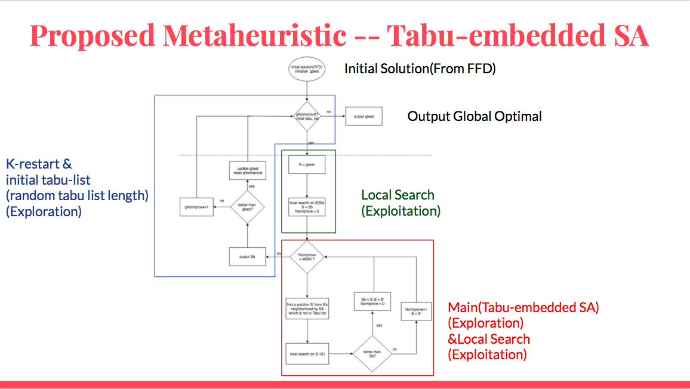
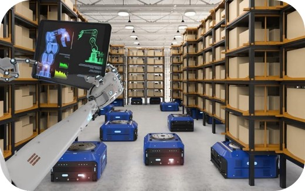

This is the Website about ChiaChen's Portfolio :)
Hi, my name is ChiaChenLee a.k.a David Lee. I hold a bachelor's degree in information management from National University of Kaohsiung. I'm a second graduate student in National Chiao Tung University, and my major is also information management. These are some projects that I involved in, thanks for your attention!
Recent Work
Android APP project: Catch!天人交戰 2017
- Introduction
The project for 2017 first place Poker City Cup Game Design Comopetition. It's a multiplayer connection 2D side-scrolling mobile game, like a complicated tag.
Demo video
- Responsible Content
Project Management and creative planning, coordinate with programmer and art director, front-end interface design and programming (C#).
- Keywords
Android APP, C#, Innovative creativity planning, Project Management

Android APP project: 愛情迷宮 LoveMaze 2018
- Introduction
The project for 2018 second place Poker City Cup Game Design Comopetition. It's a twoplayer connection mobile game, you should find out how to leave the maze, reinforce yourself and beat the opponent!
Demo video
- Responsible Content
Back-end programming (C#), Database construction and design in linux-based host (MySQL), connect data between front-end & back-end (PHP), Facebook login API.
- Keywords
Android APP, C# (unity), MySQL, SQL, PHP, Linux OS

Android APP project: OurRemix 2017
- Introduction
It's my graduation final project at college, you can use this APP to socialize people by music, create your remix music by yourself, share your creation to your friends, analyze your voice and predict what kind of person you are.
- Responsible Content
System analysis and design,Project management, front-end interface design and programming (C#),Back-end programming (C#), Database construction and design in linux-based host (MySQL), connect data between front-end & back-end (PHP), Facebook login API.
- Keywords
Android APP, SA, C#(unity), MySQL, SQL, PHP, Linux OS.
Deep Learning project: Chinese number handwriting recognition 2018
- Introduction
I collaborate with classmates to create large data about chinese number handwrite, and train the model with CNN from Keras module. Then, show the result by model summary, training history chart, confusion matrix and accuracy(about 80%).
- Responsible Content
Data preprocessing, construct CNN model and train.
- Keywords
Python, CNN, Keras.

IOT project: Driving recorder 2018 (Semi-finished project)
- Introduction
We construct the driving recorder with raspberry pi board, camera module, GPS module, APP, MQTT server. We use APP to publish start/exit command to MQTT server, Raspberry Pi subscibe command and start/exit camera, GPS.
Unfortunately, because of some motorcycle hardware problems, we did not actual implement on the motorcycle.
Demo video(APP publish Command to MQTT server)
- Responsible Content
Construct Android APP that can publish command(MQTT,C#,PHP), implement Raspberry pi camera module(Python), transfer data from Raspberry pi to server.
- Keywords
IOT, Raspberry Pi, MQTT, Android APP, C#(unity), PHP.
JavaScript project: E-commerce website 2017
- Introduction
We construct a e-commerce website by JavaScript, HTML, CSS. User can login by Facebook, place an order, add to shopping cart. We record all the authentication, purchase data on Firebase.
- Responsible Content
Construct Firebase database (NoSQL) and connect Facebook Login API, Back-end programming for all actions(JavaScript), wireframe design.
- Keywords
Web, JavaScript, FireBase, NoSQL, Wireframe.
Java Project: Mutli-agent Path Finding 2019 Jan
- Introduction
Mutli-agent Path Finding Problem is a well-studied problem in AI, We (me and my lab classmate) collaborate with ITRL, NCKU to do MAPF project. This project is similar to Amazon Kiva system.
- Responsible Content
We get all the agent's start and goal location, and we use diljktra's algorithm to get shortest path, search-based algorithm to solve vertex-conflict and edge-conflict in MAPF Problem.
Demo video for path finding
- Keywords
JAVA, MAPF problem in AI, Warehouse automation.

Python Project: Tabu-embedded Simulated Annealing Algorithm for the film production scheduling 2019 May
- Introduction
Film production scheduling problem is a NP-Hard problem. We adapt and modify the algorithm from the paper about Pickup-and-Delivery-Problem to solve Film production scheduling problem.
- Responsible Content
There are three parts of Tabu-embedded SA algorithm: 1. k-restart and initial tabu-list 2.Local Search 3. SA and Local Search. I'm responsible for 1,2.
- Keywords
Python, Metaheuristic, Tabu-Search, Simulated Annealing, Local Search.

Python Project: Medical waste image recognition 2019 October
- Introduction
A startup named Micro PC (點點塑) delegated a image recognition case to me. I consider it a rare experience that I can do something applied in business. Then I get the set of medical waste image and train it by CNN model, and my objective is to classify the different kinds of waste.
- Responsible Content
1. Build the CNN model based on the given set of image
2. Apply the model to recognize the new image.
- Keywords
Python, CNN, keras

Python & SAS Project: Artificial intelligence competition 2019 November
- Introduction
In this competition, we experience the complete process about adapting the AI to the business process, including data exploration, data pre-processing, feature engineering, data segmentation, model building, model evaluation and improvement. In final, we provide a business plan based on the model we built to make business processes better.
- Keywords
Python, SAS Viya, SAS EG, Data Analysis
Python Project: The web crawling linebot for stock on Heroku by Python linebot sdk 2020 Feb
- Introduction
There are some insights about stock-trading told by my girlfriend's dad. To compute it needs the computational ability that over the human.
Then I'm on in.
First, I refer many Python scripts about crawling stock data from Taiwan Stock Exchange website and create one for my own purpose. Then I compute the stock data according to the insights.
After, I sign up for a linebot account and activate messaging API and bind it with my Heroku App. I find it very interesting to create a bot in a short time that can interactive with people.
- Keywords
Python, LineBot, Web crawler, Heroku, Stock-trading.

Python Reinforcement Learning Project: Stateless Q-Learning for MAPF problem 2020 May
- Introduction
We solving the MAPF problem (which is the same with JAVA Project 2019) through novel distributed way. First, we reduce the problem from MAPF to the integer multi-commodity flow problem and reduce the integer multi-commodity flow problem to multi-agent routing problem in polynomial time. Then, we solve the multi-agent routing problem by a well-known reinforcement learning algorithm, Q-learning, and a variant of Q-learning that only uses a bounded number of actions in the learning process.
- Keywords
Python, Reinforcement learning, Q-Learning, Flow problem, Routing Problem, Integer Linear Programming.


{kind=link}
{kind=link}
{kind=link}
{kind=link}
{kind=link}
{kind=link}
{kind=link}